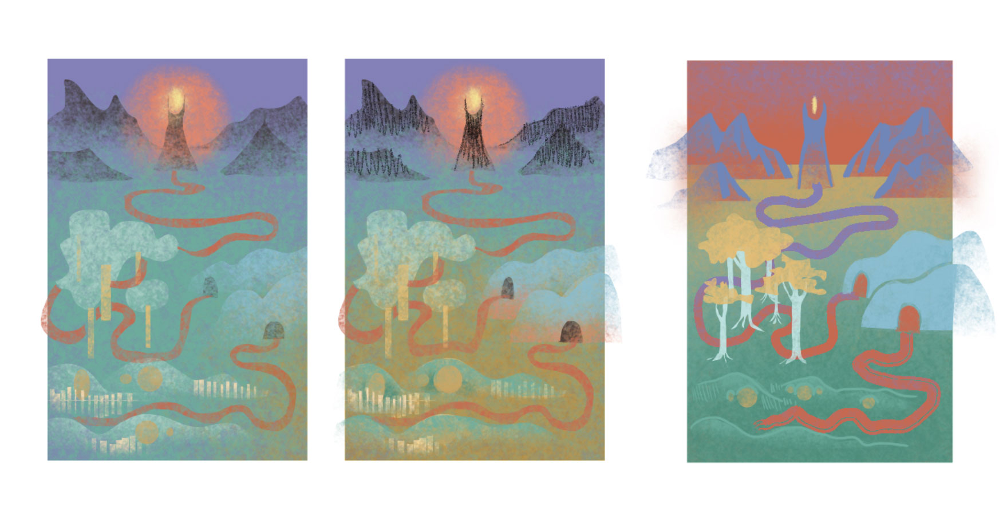
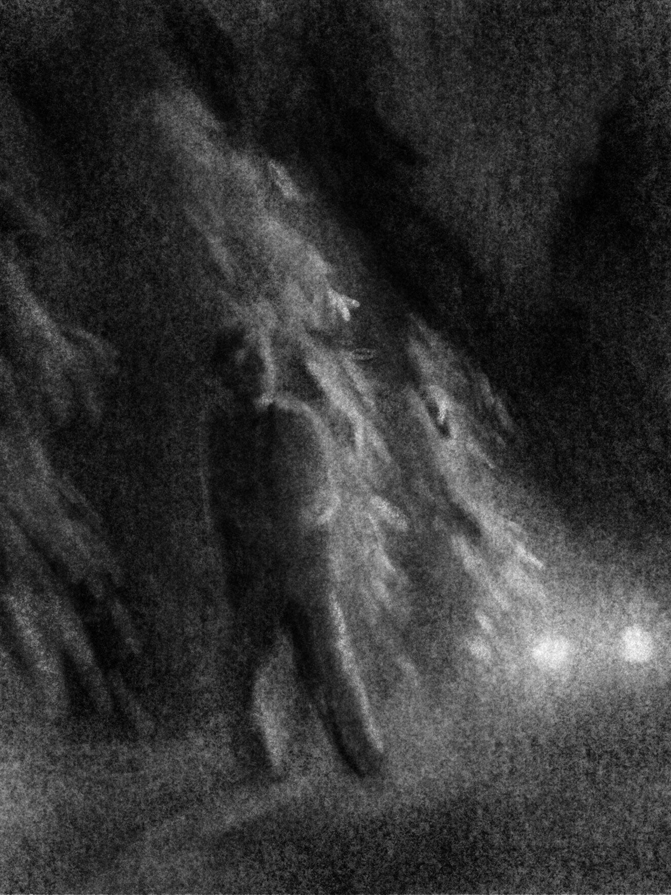
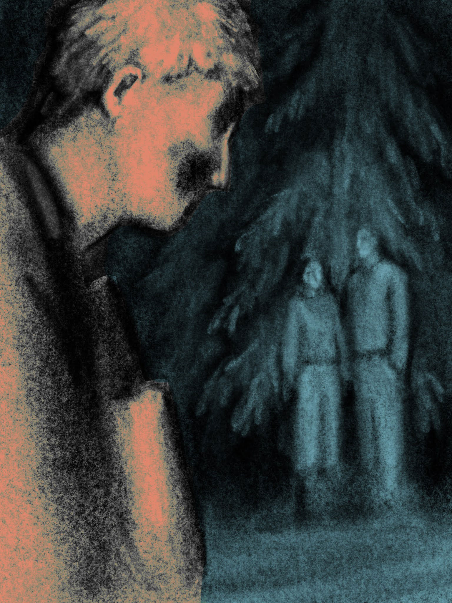
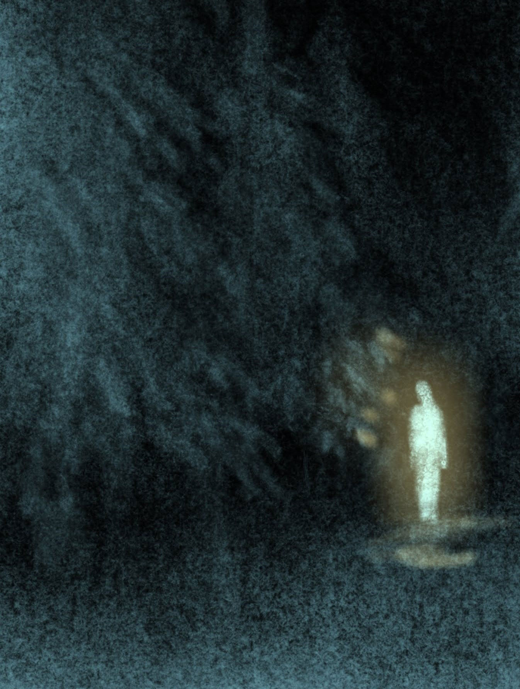
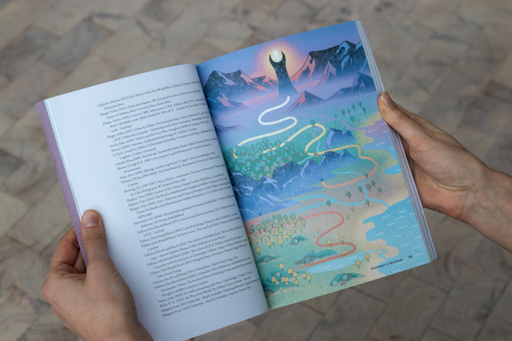
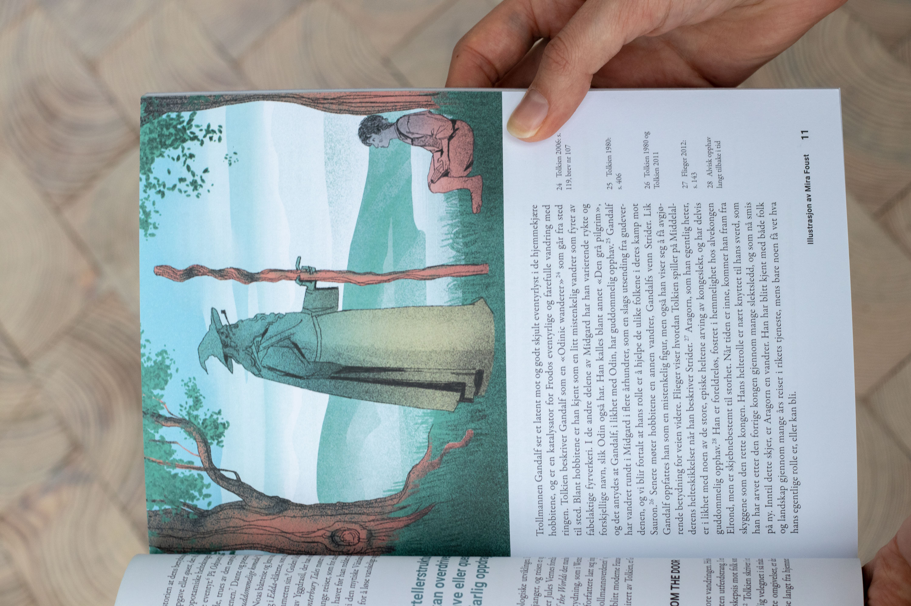
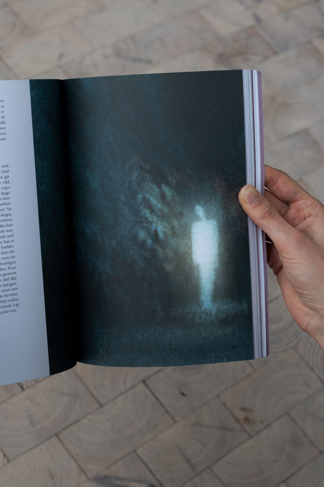
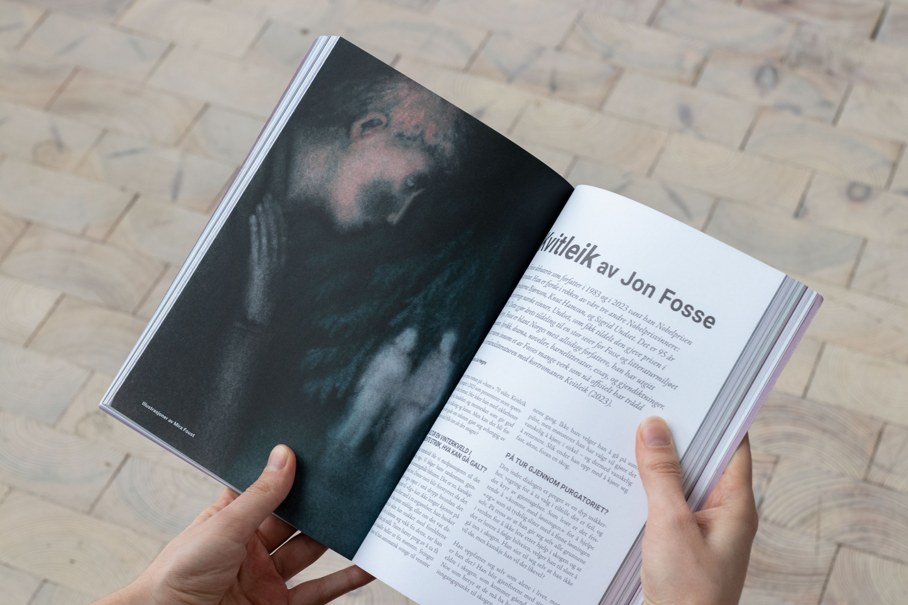

Mira Eiene Foust
Prosjekt
Replikk" ✦
24 timers tegneseriemaraton
A Film With No Name
YMT magasin
Nyttevekst bok ✦
Andre arbeid
Illustrasjon ✦
Animasjon
Plakat, tekst og trykk
Om meg


Tidsskriftet Replikk" er et uavhengig og ikke-kommersielt tidsskrift laget av studenter og nyutdannede ved Universitetet i Bergen.
Replikk" er universitetets eneste tverrfaglige tidsskrift for samfunnsvitenskap og humaniora, og har fokus på aktuelle og spennende tema som diskuteres på tvers av både sjangre og fagfelt.
Temaet for utgave #53 høst 2023 var Vandring og Jente. Jeg illustrerte to tekster i tidskriftet, en om vandring som narrativt virkemiddel i Ringenes Herre og andre fortellinger, og en bokanmeldelse av Kvitleik av Jon Fosse.
Temaet for utgave #53 høst 2023 var Vandring og Jente. Jeg illustrerte to tekster i tidskriftet, en om vandring som narrativt virkemiddel i Ringenes Herre og andre fortellinger, og en bokanmeldelse av Kvitleik av Jon Fosse.


Med temaet vandring tok jeg utgangspunkt i hva vandringen i Ringenes Herre er, eller hva veien karakterene tar er for illustrasjonene mine.
"reisen starter hjemme" om sitatet jeg tok inspirasjon fra
Kvitleik av Jon Fosse er en bok preget av mørke. Fortelleren er strandet i skogen midt på natten langt fra bebyggelse, etter han setter bilen fast i snøen.
Forvirret og i større grad påvirket av hypotermi snubler han gjennom skogen der han ser forskjellige umulige scener.
Forfatteren tar i bruk flere litterære virkemiddel som virkelig trekker deg inn i forvirringen og den mentale tilstanden til hovedpersonen,
segment og tanker blir repetert om og om igjen, som om fortelleren glemmer at det allerede har blitt tenkt.
Jeg ville fange hvordan mørket og forvirringen oppleves, det du faktisk ser når du myser inn i mørket, ikke bare lage en mørk illustrasjon.




Et par bilder satte seg med en gang i hodet mitt etter å ha lest boken. Det var de forskjellige synene fortelleren treffer på i skogen.
Han ser en lys skikkelse han funderer på å være en engel, og han ser foreldrene hans, midt i skogen, som lurer på hva han gjør her.






Neste utgave av Replikk" er under arbeid nå, og vil ha temaet sorg.